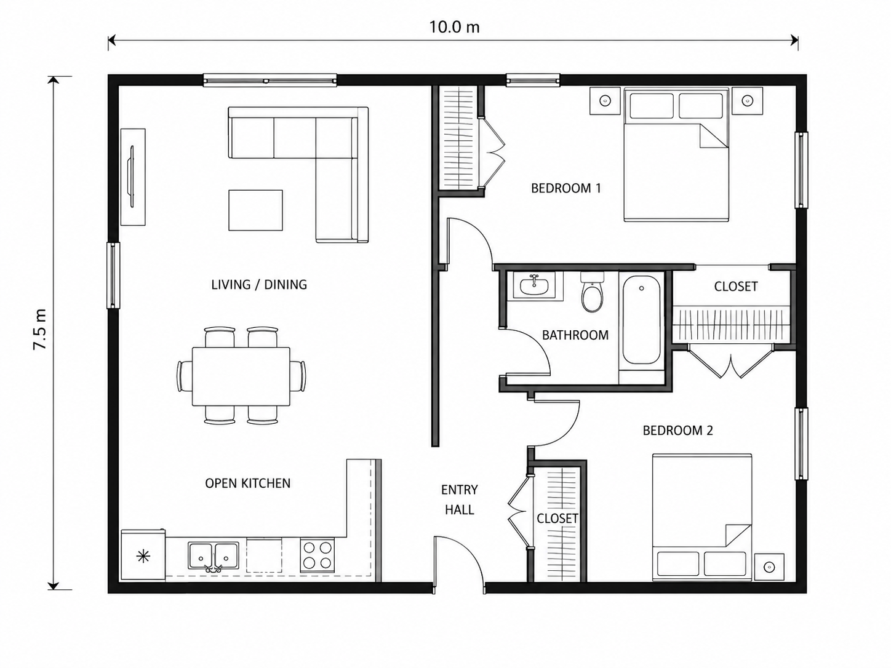
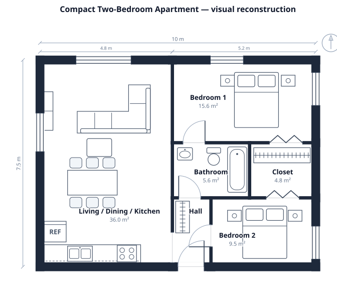
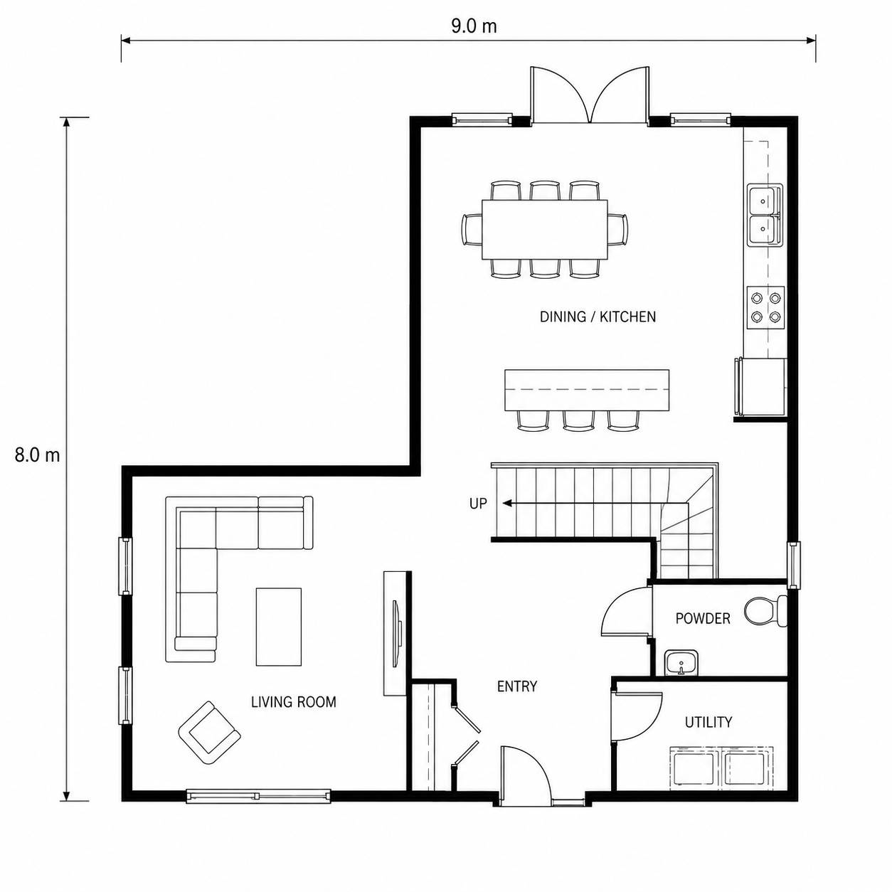
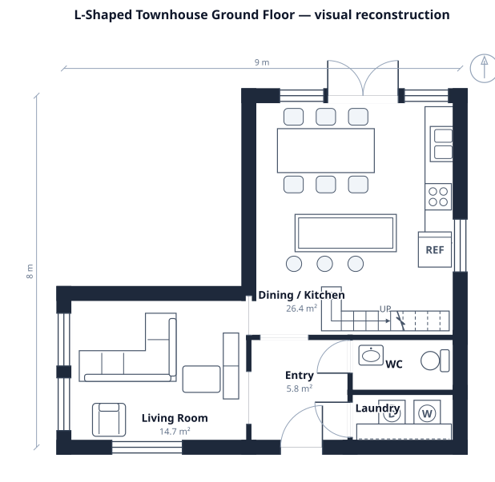
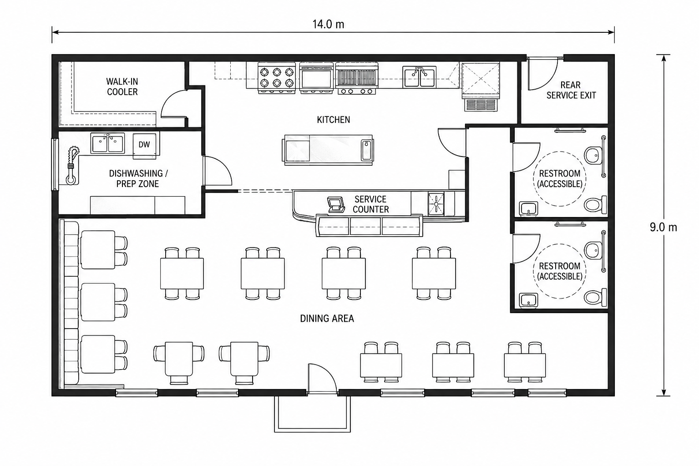
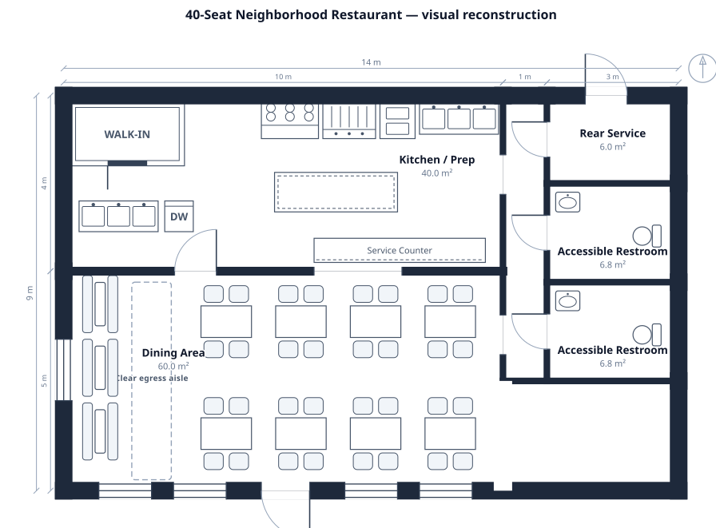

approved
with gaps
结论：现有 engine 能还原“示意图”，还不能可靠还原“可执行空间”。
三张图的 room topology、总体尺寸和大部分 symbol 都能重建，说明基本路线成立。但所有结果都出现了肉眼可见、validator 看不见的问题：label 压住家具、内外墙同厚、门扇扫到座椅、楼梯 handedness 只能碰运气、标题写 40 seats 但 engine 不核对 capacity、Accessible Restroom 只是文字而不是规则。
紧凑型两居公寓

参考图强调 open kitchen、双卧室、成组 closet、明显不同的外墙/内墙 thickness。

Topology 和 10 × 7.5 m outer size 对上；renderer 也正确给出 75 m² 的 room geometry。
L-shaped townhouse

视觉重点不是房间数量，而是 L-shaped footprint、楼梯转向、landing 和 entry circulation。

用多个 room tile 出了正确外轮廓；stairs-l 的 drafting symbol 也明显优于 generic rectangle。
40-seat neighborhood restaurant

参考图同时要求 seating density、commercial equipment、accessible restrooms、service exit 和 egress aisle。

restaurant catalog 和 grid 很强：8 组 dining table、booth、walk-in、range、grill、fryer 都有行业可读 symbol。
所以，之前的 POC 能解决多少？
方向是对的，但不是 complete solution。它能补上这次视觉测试里最显眼的 geometry / symbol 问题；商业空间的 operational correctness 仍需要新增规则。
| Visible problem | POC coverage | Vision evidence | Decision |
|---|---|---|---|
| Absolute opening offsets | Yes | 参考图依赖准确 jamb offset；percent 在 resize 后会漂。 | 保留 leading-jamb + chained placement 方案。 |
| Exterior / interior wall hierarchy | Yes | 三张参考图都把外墙画得更重，当前三张全部丢失。 | WallSegment 必须进入 domain model，不是 CSS 参数。 |
| Stair handedness | Yes | Townhouse 可以 rotate 接近，但不能保证还原其镜像版本。 | 加入 explicit mirror；split stair 维持独立 primitive。 |
| Label collision | Partial | 三张 current output 都有明显文字压家具。 | 从 room label avoidance 扩成统一 annotation collision engine，包含 furniture labels。 |
| Transform / fit | Yes | 大量 furniture 需要人工调坐标才不越界。 | rotate → final bounds → fit 的顺序正确。 |
| Door swing clearance | No | Restaurant front door 视觉上侵入 seating circulation，validator 没看到。 | 把 door leaf swept area 纳入 protected geometry。 |
| Capacity / ADA constraints | No | “40-seat” 和 “Accessible” 都只是文字，没有可验证含义。 | 先按真实 demand 决定是否扩 scope；不要假装当前已支持。 |
建议继续做，但按这个顺序进入 production
- 先完成 geometry contract：WallSegment、absolute opening、transform final bounds。
- 再做 unified annotation collision 和 door-swing clearance；这两项直接决定图能不能读、空间能不能走。
- 随后补 mirror / split stair。Device/Circuit 留在 shared model 层，不和 floorplan renderer 混写。
- Capacity、ADA、code compliance 先明确 scope；没有规则就明确报 unsupported，不能靠 label 冒充。
为什么不能把 imagegen 图当作 ground truth？
image model 会生成视觉上可信、几何上可疑的细节。这组三张图中也有门/走道关系需要人工解释。因此 benchmark 判断的是 SchemaTex 能否表达和验证“看起来像真实需求的结构”，不是逐像素复制 imagegen 的错误。